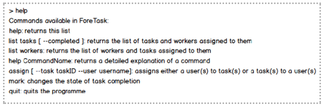
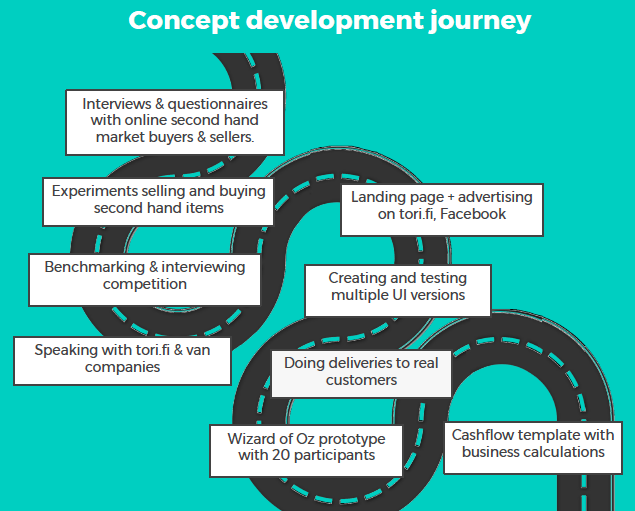
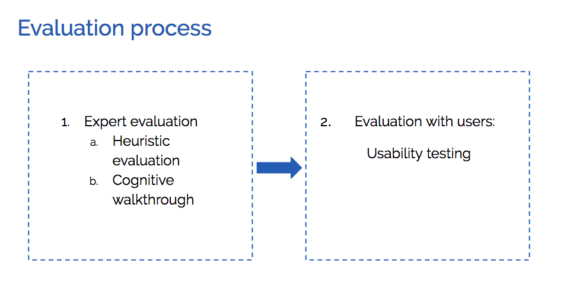

Finishing my master's degree in HCID at KTH Royal Institute of Technology, currently doing an internship at CERN, Geneva. My background is psychology, I have 2 years of consumer behaviour research experience in London.
My passion is creating digital products with the best possible user experience by drawing on my psychology knowledge, technology and design skills.
Redesigning and implementing CERN’s web based service tools. User testing and data analysis, icon and UI design, front-end development & enhancing security by implementing two factor authentication with C#.
2017 Autumn - Present
Master Student at KTH Royal Institute of Technology, Stockholm, Sweden
Second year of EIT Digital Masters Degree. Majoring in mobile and ubiquitous user interface design and development. Also taking courses in Machine Learning.
2017 Summer
UX Designer at Nokia, Espoo, Finland
My main tasks were UI design for IoT device management systems for different types of users. This included user testing, design, proposing new stories for backlog. I also worked on the implementation of one of the UIs using React.js & CSS3.
2016-2017 Summer
Master student at Aalto University, Helsinki, Finland
The first year of EIT Digital Master School, majoring in Human Computer Interaction and Design; minoring in Business & Innovation.
2014-2016
Research Executive at Newsworks, London, UK
Newsworks is the marketing body for national UK newspapers. Its aim is to encourage advertisers to advertise in the press. I worked on Newsworks’ qualitative and quantitative research projects exploring advertising effectiveness: data analysis; research, materials & presentation design. I initiated an academic partnership with University of Bath and was a leader of 3 research projects.
2012-2013
Research Assistant at New Zealand Institute of Language Brain and Behaviour, Christchurch, New Zealand
Internship year, part of my bachelor's degree. I was involved in multiple academic research projects looking into gestures, speech, emotions and others. My tasks included designing research materials, running focus groups, conducting interviews, testing people in the lab, analysing data, writing up the reports and research proposals, and presenting findings to the research team.
2011-2014
BSc (Hons) Psychology student at University of Bath, UK
Graduated with First Class Honours. Received The Best Dissertation Award from Bath Psychology Department and The Bath Award for achievement in extra curriculum activities. One of the top 3 universities to study psychology in the UK.
More about me:
So far I have Iived in 7 different countries: Lithuania, UK, New Zealand, Greece, Finland, Sweden, Switzerland and have travelled to 55. I plan on making it more ! These multicultural experiences enable me see things from many different perspectives and design effectively for a variety of different user types.
I love challenging myself both in work and my spare time - the highest mountain peak I have conquered so far is a Huayna Potosi 6088m, in Bolivia. It took 3 days in total including 9 hours of ice climbing in the dark in -20 degrees to reach the summit on the last day.
I love giving back: During the year 2015 I was the vice president of Lithuanian Youth Organisation in the UK a non-profit organization representing Lithuanians in the UK while working full-time in London. During that year besides the various social events, in less than 2 weeks I organised a conference ‘Science of Successful Career’ in London for over 120 attendees with 15 speakers. Many of those who came to it received job offers as a result.
I am curious: I used to go to many events when living in London and June 2015 I discovered Outreach Digital. It is a pro-bono community of digital enthusiasts organising free workshops covering technology topics. This is how I found my passion for technology. But I felt I could do more so July 2015 I became a part of the executive committee. I was responsible for redesigning the website and group's involvement with other charities.
I am used to hard work: For more than 8 years I was attending a regular school and music school at the same time where I learned to play with violin and piano as well as rules for composing music and its history. I was playing the school’s symphonic orchestra for more than 2 years which often involved travel to different cities. This taught me to balance my workload as well as to work in a team since early days.
Contact Me
Jammin
September 2016 – December 2016 I worked on developing a responsive web application connecting musicians in Helsinki in a team of 2 people.
Our focus was usability, so before starting the project we conducted 10 face to face interviews with people with an interest in music and an online survey. The data was used to refine our idea and for user group analysis and persona creation.
Next we created low fidelity prototypes using Balsamiq. We presented them to the users during low fidelity prototype testing.
We asked users for feedback on features we were planning on developing and the user journey.
We developed Jammin using HTML5, CSS3 and React.js. Since our focus was usability we used firebase for back end.
For high fidelity prototype testing, we used a semi developed version of the service. We asked participants to find someone to jam with in the city of Helsinki and to think aloud during testing and comment of their actions. We changed and provided better explanations on the steps users need to take when creating the profile on the site on the basis of received feedback.
I have only started learning web development techniques when we started the project, never have coded before, independently, so for me this project was an incredibly steep learning curve not only in user research and testing but also in learning web development HTML5, CSS and Javascript. By the way Jammin is fully a responsive web application.
This was a project undertaken for the UI construction course at Aalto University in autumn 2016. The goal of the course was to design three different UIs - CLI, Responsive and platform specific - for the same purpose. We designed a task and workers managing tool for a construction foreman - team leader of a construction site.
We created an interactive mock up of Android OS mobile app for the platform specific UI following Android guidelines. Check out the Android app mock up - you need to download it for it to be interactive.
Finally, you can see an example 'help' command from the command line version of the UI in below image:

I worked on the designs of all the UIs and on the implementation of the responsive UI.
Result: We got the only 5/5 grade in class.
Digelius
November 2016 for our research methods and design course at Aalto University we’ve been asked to find a brick and mortar shop with small online presence and find out if there was anything there that could be improved. If yes, how. Me and 3 team members ended up with a record store in Helsinki called Digelius.
We did in store observations followed up by interviews with customers and staff and 4 usability tests of the online store website. We conducted thematic and user group analysis, used personas, visualized the data with consumer journey and stakeholder maps
The customers loved the in-store. The personalised customer service, owner’s expertise in music. Occasional in store events. Being part of a community. Many loyal old customers, but it is difficult to attract new young ones.
However, the website did not represent the in-store feeling. Also, online store only had 10% of the in store records available in the catalogues. This is a problem because young people like checking online before committing to going to the store especially if it’s their first time.
We recommended redesigning the website in such way where it conveys the community feeling in store and how awesome it is. Start adding new record arrivals to the catalogue to eventually have a more complete online catalogue.
Junction 2016: MailSnail
During 48h Junction hackathon in a team of five we built a smart mailbox, MailSnail. This was to address a problem of forgetting to check our physical mailboxes and thus often missing an important letter.
Mailsnail informs you when there is a letter in the mailbox by sending a notification that you have a new letter in your mailbox to you as a tweet, email or displaying it on the screen of a smart coffee Muki mug. In addition, we did some work on the coffee mug and taught it to display the temperature of the drink inside it. Just to make it extra awesome.
I developed the frontend using HTML/CSS and created the designs.
While working in New Zealand Institute of Language Brain and Behaviour, in 2013 I decided to investigate how the impact of voice pitch might influence the selection of a female job applicant in the initial candidate screening stage. The project was finished in 2014 as data collection took a lot of time.
I created 3 voice recordings. I recorded one mid-pitch sounding female, and manipulated her voice with R to make it sound higher and lower by approx. 20 Hz.
I also created two CVs, one high one low quality. I pilot tested them.
Then I set up online survey, where first the participants listened to one of the recordings where the candidate imitated leaving a voice message on the phone. Then I presented them with one of two CVs. Later a set of questions was asked. Each participant only listened to one recording and saw one CV, so a lot of data had to be collected to get enough responses for all – high, low pitch and CV quality conditions.
In total I collected 325 responses. I conducted Exploratory Factory Analysis and Univariate Analysis of Variance on the data.
I found that males preferred the lower pitched female candidate whereas females preferred the high pitched candidate. I found that this corresponds to the Social Identity Theory of Leadership which suggests that people prefer leaders who represent their group traits and are similar to them.
However, I also found that this only had an effect when the applicant’s CV was of high quality. On one hand this is good news since this means that even sounding like a leader won’t get you selected if your qualifications are poor. On the other, voice does have an effect. Of course it is probably only a small one, among all other factors but employers should be made aware as much as possible of this type of existing biases.
I was awarded the best dissertation award by the University of Bath Psychology department for this project.
Roomiego
For our Start Up Experience course at Aalto University we had to find, test and develop a new service idea. Also, we had to go through the process of setting up a start-up in parallel including discussions on company values, shareholders agreement etc. I decided to participate as a CEO, meaning that I was responsible for team recruitment, building and our overall performance.
To inform the development of our idea we conducted interviews, developed a landing page to test the different pricing models, launched an intensive two weeks social media campaign, followed by real life experiment with people selecting their flatmate preferences using the simplified version of the gamified solution we worked on creating as means of testing it.
Our final concept was flatmate matching app, helping people find place to live not on the basis of room but on flatmate compatibility. The idea is to match them on key characteristic such as cleanliness and need to socialise using a short online game and then letting them explore each others profiles by integrating various social media APIs.
I was involved in every task, from creation of landing page and social media channels to suggesting and designing the solutions and research probes required to test our idea, creating the pitches every two weeks to present the progress of our work.
Also, feel free to check out our final pitch (click play to see all animations)
And the project’s marketing video:
We were one of the top two performing teams according to our teachers. However, after 3 months when the course finished we decided not to continue the idea because although the product-market fit was good, the market size in Finland was too small and a rather large initial investment would be required to be able to scale to other countries to make the business profitable, as informed by our cashflow calculations.
NASA Europa Challenge 2017: Farmate
During the summer 2017 in a team of 3 we set out to participate in NASA Europa Challenge 2017. We had to find a problem to solve and build a solution for it on top of NASA’s world wind platform.
We decided to implement a system that helps farmers to determine how much irrigation they need to do every day to help reduce water waste.
We validated the idea by reaching out to farmer communities on online forums. We researched academic papers to find a suitable formula and designed our database, backend on that basis. After several paper sketches we designed the front-end skeleton too. We decided on using React.js for front-end, python and firebase for back-end.
I was responsible for application design and I worked on the front end with react.js and CSS3 .
We were invited to the NASA Europa Challenge Finals in Helsinki and won the most collaborative team award.
Tavarat Kotiin - Items2Home
For our 5 month long design project course at Aalto, we had to develop and prototype a concept of a new service in the field of urban mobility.
The focus of the first sprints was finding problems worth solving through extensive user research in mobility area. The problem we decided on solving was exchange of big second hand items bought online. Especially in Finland most of the delivery options available are really expensive. We decided to challenge that by creating a service which does multiple deliveries on the same route by combining pick ups from multiple sellers and delivering to multiple buyers.

We conducted 64 experiments informing the development of our concept: both the user interface of the web service as well as the business model and how the communication on the delivery days would work.
We got the highest possible grade for our work and a special mention for exceptionally high quality materials and well informed experiments.
Video of me doing the final presentation of our concept:
I was leading most of our experiments in our team of 5 people. I created many of the experiment materials including low-fidelity prototypes, scenarios, questionnaires and other probes. I also created the designs of handouts, posters (Adobe InDesign & Photoshop), and 7/10 of our presentations.
In addition, to this I created the first version of our web service prototype using Adobe XD and shaped the design of our second and third prototype iterations.
To find out more about our concept visit our landing page which also contains link to our final prototype.
Cane Buddy
For Emergent User Interfaces Course at Aalto in a team of 5 we were building a device helping blind people navigate the environment.
While our initial idea was to build a glove with ultrasound sensors the sense the objects in the environment and give feedback about them using vibration motors, using Arduino Pro Mini. Our initial idea was to replace the white cane, however soon we realised that would be impossible due to the richness of feedback the cane is able to provide as well as its other important meanings such as being a sign to the motorists that a blind person is attempting to cross the road.
After building the glove prototype and testing it ourselves, me and another team members also took the our device to the Finnish Association of Visually Impaired and tested it with 5 visually impaired users. We discovered that it would be more beneficial to place the device somewhere higher, as positioning it on the hand overlaps with the feedback the cane already provides. Therefore our final product ended up being a necklace, using the same technology as previously.
I initiated collaboration with Finnish Association of Visually Impaired, conducted the user testing, initiated the pivoting from glove to necklace, assisted with programming in Arduino IDE, designed the handout and presentations for the demo gala. I also did an individual course on Arduino UNO on Coursera to better prepare for working on this project prior to starting the course.
Project video:
Usability evaluation of Roidu tablet surveys

This was a project undertaken for the usability evaluation course at Aalto University in autumn 2016. We had to evaluate 6 different tablet surveys for collecting patient feedback at hospitals in Finland developed by Roidu. The choice of evaluation method was up to us.
We conducted expert evaluations and usability testing in one of the hospitals.
Expert evaluation across all the surveys revealed a lack of consistent ecosystem across the surveys, whereas the usability testing showed the lack of taking the context into consideration. That is setting up the questions in a way that is convenient for the user to complete while waiting for the appointment among many other findings.
Based on our results we developed survey design guidelines and mock ups, presented them to Roidu and they decided to implement our recommendations.
Just a Beer
“Just a Beer” is a social application to meet new friends by creating hangouts in the app or requesting to join a hangout developed autumn 2017. The creator of the hangout has the right to select one or more people to meet up with. Each hangout event has public discussion board and a private message board which is open only for people who have been accepted to join. Unlike many other meeting platforms, we are not focusing on long discussions before the meeting and planning far in advance, which is how it works in majority of other apps of similar purpose such as Meetup.com, but rather focusing on spontaneous meeting suggestions.
The diagram below illustrates the development process of our app:
After the user research, analysis, paper prototyping and branding discussions we created the first clickable prototype. The full interactive prototype in InVision is available
here.
After testing it and taking the findings into account we developed a responsive web app prototype using Ionic framework which is based on Angular. We chose this framework because it allows for the usage of Android native suitable elements so since our end goal was an Android app, this was perfect for our prototyping needs. Below are some screenshots of the web app developed with Ionic, you can also explore the full prototype
here.
Finally after testing and analysing the results of the web app we began the development of the Android app. We used Android studio for this. We chose Firebase as our database and backend solution. Below are some screenshots of the Final version of the Android app developed with Android studio:
We worked on this project in a team of 4. I led the user research, did the analysis of the findings and creation of the personas that informed our further development. I also drew paper prototypes that we later discussed and combined. I worked on the clickable prototype and moved it to InVision app. In the web app development stage I worked on home and profile views of the Ionic app including styling and adding the logic from a static json file we used. Finally, in the Android app, I was worked on the profile and create hangout views. I also implemented the logic for the profile when connecting the app with Firebase making the calls and passing the data from other fragments using intent.
Wonderwall
Wonderwall is a web app inspiring travellers for new adventures through visual & tailored travel recommendations and booking integration with Finnair API.
We developed it during Europe’s largest hackathon Junction 2017 in a team of 5 during 48 hours for Finnair’s intelligent air travel challenge. We won second place for our solution.
The backend is built with NodeJS and is hosted on Bluemix, the front end is developed with React.js and CSS.
Since this was a hackathon project and we did not have a lot of time, after spending a few hours brainstorming and drawing rough site map and UI sketches we dived straight into development. My responsibilities included UI drawing, developing and styling the login page, developing date picker component for the main map with React and CSS, also writing and doing the pitch.
In a team of 4 for Multimodal Interaction and Interfaces course at KTH in less than a month we created a marker-based AR zoo game which allows users to manage a zoo that is a combination of virtual animals, tangible animal habitat figures, and soundscapes of animal sounds.
We used the Vuforia SDK and Unity 3D to build AR application, Blender for 3D modeling virtual characters, and SketchUp to create the 3D printed tangibles. My main contributions to the project were creating 3D printed tangibles, testing them and trying the different patterns for object recognition with Vuforia and Unity, also, user testing. I was also involved in designing, sketching and researching the idea interaction sketches e.g. how the game logic could reward the user for playing and board design.
Each 3D printed object represents an object related to a different animal, which appears once the object is placed on the game board. Part of the challenge was to decide which objects to choose. This involved some research about the different animals we decided to model for our AR zoo. It was decided that the object should either be something the animal would eat, or something from the type of environment and habitat where the animal lives. Our final list of animals and objects representing them is the following: Bunny - Carrot, Bear - Tree, Polar Bear - Fish, Monkey - Banana, Penguin - Iceberg, Lion - Cave. It was also verified by a short user test where I presented the participants with images of animals and these items and asked them to pair the animals to the items. The results showed that not all connections were equally intuitive and clear but after short discussion with the team we decided to leave these combinations since for example a tree could be used with another backup animal we had planned for in case 3D modelling of animals with Blender would not go as well as expected.
The modelling was done with SketchUp 2018. The key challenge was finding the balance between making the models realistic and complicated enough to make them recognisable, but also simple at the same time for successful 3D printing.
Since the printer at the VIC studio which we used could only print in white color, the models were created without the colors and it was decided to paint them after they are printed. The basic workflow for producing each figure was the following: 1) modelling the object in SketchUp, 2) exporting the file as .stl (the format which the printer required), 3) printing the figure and 4) painting it with acrylic colors.
Soundscape, 2D image recognition, and virtual animated 3D characters were implemented successfully but the 3D object recognition with Vuforia turned out to be challenging in terms of lighting and contrast of the 3D objects. Since by the time we put all the different parts of the project together - sounds, game logic 3D tangibles and AR animals we were running out of time, to ensure a smooth user experience during the game and to allow user to focus on interacting with the zoo and animals rather than trying to determine what is a correct way to point his phone at a 3D tangible in order to make the animal appear, we added QR codes as a way to trigger the AR animals appearance on the board. Using image recognition for this instead could be a future improvement.
How can design increase access and reduce friction for the widest number of people? Through a practical given topic, we’ll teach students an approach to understanding and solving for barriers experienced by teachers today.
This was the brief which we had to answer to be invited to Student Design Challenge Finals in Lyon that are a part of Interaction18 conference attracting interaction design professionals all over the world.
We completed a crash-course in Inclusive Design, a workshop Margaret Price from Microsoft Design who together with her colleagues has mentored us during our time in Lyon.
More specific challenge we had to work in Lyon in the teams of 3 was to design a solution using inclusive design principles for people with specific (blindness in our case) disability teaching the concept of rhythm but also thinking how this could relate back to quality education issue.
One of the most challenging parts during the process was the fact that we could not do any primary research with people who suffer from blindness. Instead, during our design process, we made sure to get feedback from designer attending the conference who have worked with blindness, watching many interviews with them online and thorough desk research as well as testing a prototype of our concept with a blindfolded conference participant. My role was mostly focused on research, drawing rough interaction sketches of several of our concepts and collecting feedback, building and testing our prototype, working on the video (pitch) flow and script.
Our final concept Mockingbird is a musical instrument to construct rhythms using 3D objects.
It has a tangible board that transforms objects’ weights into sound. The board has two axes: time and pitch. You can think of it as a blank line of sheet music. When an object is placed on the board, it becomes a tone with a duration and pitch. A quarter slice of pie is a quarter note. You can put two quarters together to form a half slice - a half note. Similarly, two half-slices can combined to form one note. Players place these objects on the board to make a rhythm.
Summer 2017 as part of my entrepreneurship studies minor I spent two weeks in Technical University of Munich working on creating an innovative business concept for EOS, 3D printing manufacturer. Mentored by Futurice we investigated opportunities within additive manufacturing industry using lean service creation method. The concept we produced was EOS Nimbus: an ecosystem for transforming EOS’s traditional 3D printing business - that is selling printers and materials for printing to customers - into 3D printing as a service for businesses looking to start using additive manufacturing. Nimbus consists of automated 3D model analysis via an online platform, 3D printing hub franchise under the EOS brand, and community of experts on online platform as well as in the hubs as a service.
While designing our concept as well as conducted interviews with company representatives from Wärtsilä, Mercuris, Shapeways, 3DBear analysing the findings with the help of 18 different lean service creation canvases.
Within our team of 4 I conducted most of the interviews and designed our final presentation.
In less than 3 hours we also had to produce a video presenting our concept. I co-wrote the story line for the video; created its concept and the drawings for it.